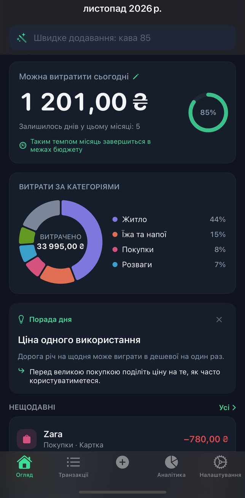
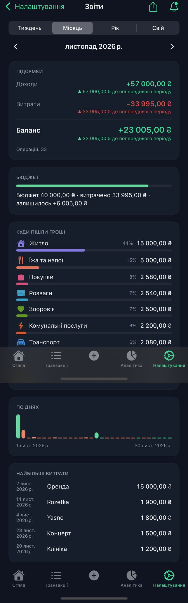

Напишіть або скажіть
Сума і слово, у будь-якому порядку. Голосове введення розпізнається на вашому iPhone.
Облік витрат на вашому iPhone
Напишіть або скажіть, що ви витратили. Budget Crab відносить витрату до категорії й зберігає все на вашому iPhone. Без підключення до банку. Без облікового запису.
 iOS 17 або новіша
iOS 17 або новіша
Напишіть АТБ 350 — і «Швидке введення» розпізнає витрату 350,00 ₴ у категорії «Їжа та напої».
Як це працює
Сума і слово, у будь-якому порядку. Голосове введення розпізнається на вашому iPhone.
Budget Crab обирає категорію. Змініть її один раз — і наступний запис із того самого місця отримає ту категорію, яку обрали ви.
Витрати за категоріями, місячний ліміт для будь-якої категорії і весь місяць з першого погляду.
Конфіденційність
Ваші дані залишаються на вашому iPhone. Ми їх ніколи не отримуємо. Якщо ви користуєтеся резервним копіюванням iCloud, до копії iPhone може потрапити їхня частина — наприклад, налаштування та зведення для віджета; Apple її шифрує, і ми не можемо її прочитати. Базу транзакцій застосунок до резервної копії не включає, тому перед переходом на новий iPhone експортуйте CSV.
Звіти
Дивіться, куди пішли гроші за будь-який тиждень, місяць чи рік: доходи, витрати, ваш бюджет і кожна категорія.
Переглядати звіти можна безкоштовно. Автоматичні щотижневі та щомісячні звіти доступні в Premium.

Мови
Мови застосунку:
Голосове введення теж працює цими мовами — на вашому iPhone, якщо на ньому є диктування на пристрої для цієї мови. Як додати мову диктування
Нічого з того, що ви вводите, нам не надсилається.
iOS 17 або новіша